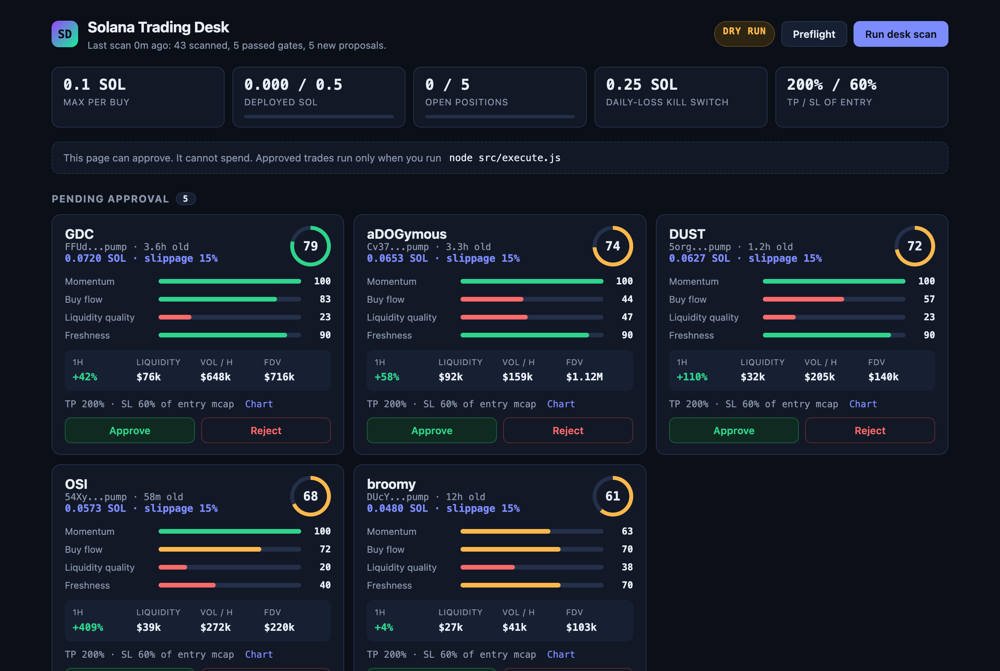
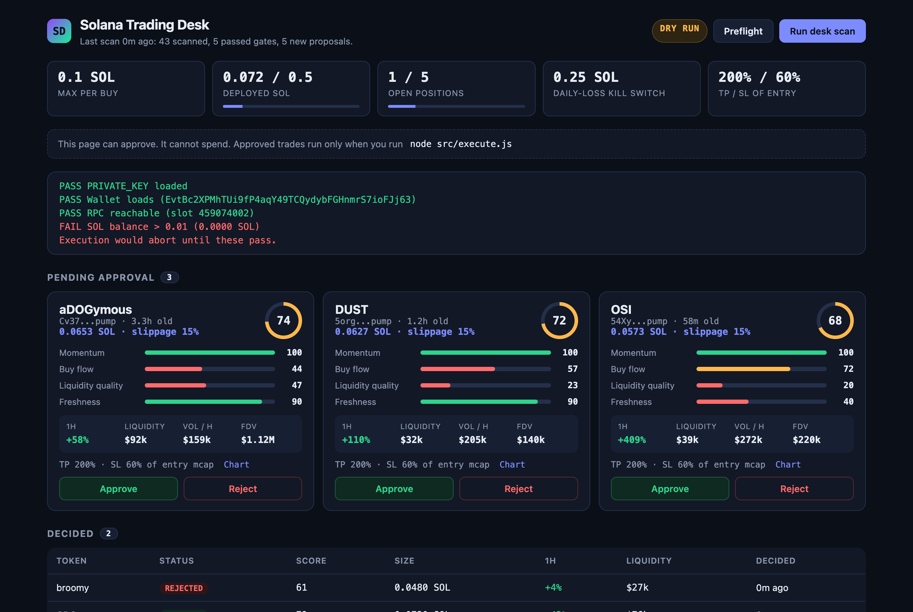

Agents propose. You approve. Nothing spends by itself.
The CRIPTOGRAFIA Solana desk, where 5 agents do the boring 95%: scan the market, score setups, size positions. They stop at the 5% that spends money. That part needs you.
Real run from a fresh clone. The tokens are live scanner output, not recommendations. The wallet is a brand-new throwaway with 0 SOL, so preflight refuses to trade.
How it works
Everyone posts "350 AI bots run my trading desk." This one has 5 agents with one job each, and a human gate between the proposal and the money.
Scanner
Pulls the candidate universe from Dexscreener and applies hard liquidity, age and volume gates.
Setup analyst
Scores 0 to 100 on a transparent rubric. Every sub-score is visible.
Risk manager
Decides if and how much, inside the per-buy and portfolio caps.
Head of desk
Runs the cycle and escalates only what clears risk into the queue.
You
Review each proposal in the web UI or terminal. Approve or reject.
Executor
The only code that can spend. Run it yourself: node src/execute.js


The score, in the open
A starting rubric, not a black box. Change the weights in src/agents/setup.js.
Prove it on paper first
node src/paper.js --loop 15trades every signal on paper- Subtracts 5% friction from every result for slippage and fees
- Reports expectancy by score band
- If expectancy doesn't rise with the score, you just saved your money.
Safety rails, all in code
Not prompts. Checks that run before anything is signed.
Execution
- DRY_RUN on by default. Going live means setting
DRY_RUN=falseyourself. - Preflight must pass: key loads, RPC answers, wallet funded.
- Per-buy cap on both the REST and WebSocket paths.
- Portfolio caps: max deployed SOL, max open positions.
- Daily-loss kill switch halts all execution.
- Slippage bounded to 1% to 25%, cooldown on unswappable tokens.
- Server-signature verification on every fill before signing.
The web UI
- It can approve. It cannot spend. The server has no execute route.
- Listens on
127.0.0.1only and rejects any other Host. - Every write needs a per-session token, so other sites can't approve through it.
- No external scripts, fonts or CDNs. It talks only to your machine.
- Your keys stay in your
.env. Nothing here phones home.
Quick start
Node 20+. Nothing below touches a wallet or sends an order.
# get it git clone https://github.com/metaver5o/solana-trading-desk cd solana-trading-desk npm install cp .env.example .env # limits and filters; PRIVATE_KEY only needed to execute # the control room npm run web # http://127.0.0.1:4777, then "Run desk scan" # or the terminal node src/desk.js # scan, score, size, queue proposals node src/approve.js # review the queue node src/approve.js <id> # approve: intent only, spends nothing node src/execute.js # preflight, then DRY_RUN execution
Honest limits
- The scoring heuristic is a starting rubric, not proven alpha. It filters for liquid, trending, buy-pressured tokens. It does not predict price.
- Dexscreener's free data is rate-limited and can lag. Serious use needs a paid feed and RPC.
- Memecoin trading loses money by default. This tool makes the process disciplined and auditable. It does not make it profitable.
- Nothing on this page is financial advice.